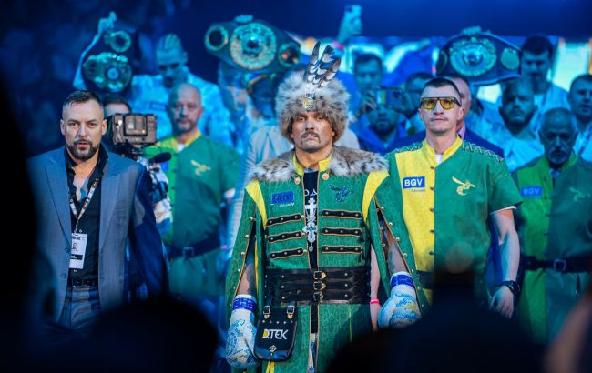
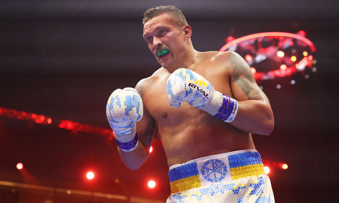

Олександр Усик переміг Тайсона Фʼюрі і став абсолютним чемпіоном світу
37-річний українець Олександр Усик переміг британця Тайсона Ф’юрі під час бою у Саудівській Аравії і став абсолютним чемпіоном світу з боксу у надважкій вазі.

Чемпіон світу за версіями WBA, WBO та IBF Олександр Усик досить впевнено виграв об’єднавчий бій проти володаря титулу WBC Тайсона Ф’юрі.
Ще до початку двобою його називали історичним, адже вперше на кону поєдинку за звання чемпіона стояло чотири пояси, які ще нікому не вдавалося зібрати в одних руках у цій ваговій категорії.
Перша половина бою була достатньо рівною. Ф’юрі користувався перевагою в габаритах, але український боксер все ж зміг декілька разів дошкульно влучити в голову британця. Той також провів декілька вдалих атак аперкотом.
До 9-го раунду судді віддавали свої оцінки з мінімальною перевагою Ф’юрі.
Однак саме в цьому раунді Усику вдалося провести видовищну атаку і завдати потужної серії ударів. Британець пропустив три удари в голову і ледь втримався на ногах, спершись на канати.
Суддя в ринзі не дав Усику завершити атаку і почав відраховувати нокдаун британцеві, який ледь-ледь тримався на ногах. Тайсон, однак, не впав і надалі його врятував гонг. Три останні раунди пройшли в більш-менш рівній боротьбі з незначною перевагою українця.
Менеджер Усика Олександр Красюк після матчу сказав, що “рефері вкрав нокаут” в українця.

За підсумками двобою 2 з 3 суддів віддали перемогу українцеві, один вирішив, що сильнішим був британець.
Після поразки Тайсон Ф’юрі висловив незадоволення оцінками суддів, зазначивши, що вони віддали перевагу українців, тому що в його країні йде війна. Також на післяматчевій прес-конференції британець заявив: його команда до останнього думала, що Ф’юрі веде за очками, тому він начебто не збільшував інтенсивність атак наприкінці бою. Попри це він визнав, що українець “підловив” його в 9-му раунді.
У 2022 році в інтерв’ю ВВС Усик заявляв. що стане абсолютним чемпіоном світу. До цього двобою 35-річний Ф’юрі виходив переможцем у 35 боях, і має лише одну нічию. А Усик мав 21 бій, і у кожному з них перемагав.
Вага Усика під час зважування перед двобоєм склала 101.2 кг і є найбільшою в історії українця. Втім, меншою за вагу Тайсона Ф’юрі. Британський боксер важить 118.8 кг, інформує Sky Sports Boxing.
Переговори між командами Ф’юрі і Усика були тривалими і непростими, а двобій кілька разів відкладали.
Контракт на проведення двобою передбачає обов’язковий реванш.